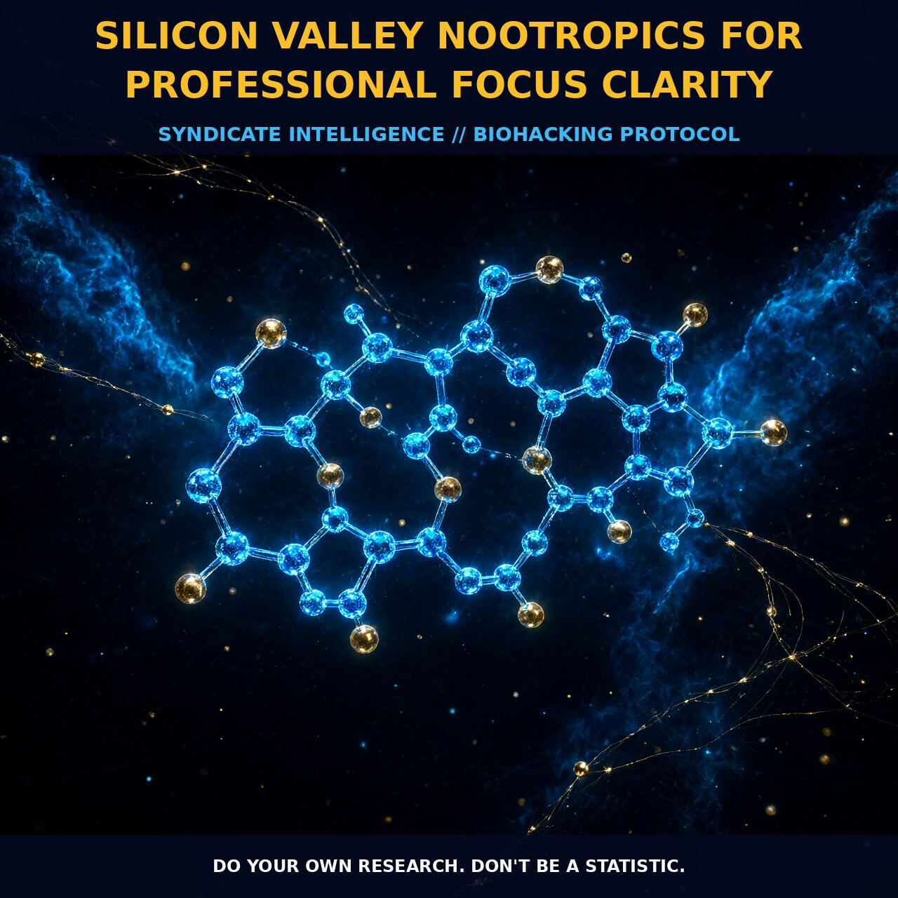

Modulating Neural Pathways for Sustained Cognitive Clarity

1. The Architecture of Cognitive Clarity
The architecture of professional brain clarity is defined not by acute pharmacological shocks, but by the sustained modulation of neural signaling pathways. Silicon Valley executives and high-performing professionals are increasingly leveraging nootropics to diminish background noise caused by stress, creating an optimal internal environment for innovation. This approach eschews rigid chemical stimulation in favor of eliminating the feelings of forced effort that typically emerge after one to two hours of intense cognitive load.
By engaging in sustained use, these compounds allow individuals to maintain alertness and clarity of thought as they pivot between complex tasks. This effectively extends the window of peak mental performance, smoothing out the jagged peaks and valleys characteristic of traditional stimulants. For knowledge workers navigating information overload, this stability is critical.
2. Biological Leverage and Synaptic Plasticity
The biological advantage of nootropic stacks lies in their ability to address the varied chemical and genetic wiring of individual users while providing a standardized boost to cognitive function. While each person has unique variations influenced by inherited genes, diet, and environmental factors, sustained stacking produces more reliable results than isolated dosing. This strategy minimizes the risk of diminishing returns or unexpected side effects associated with high-dose single compounds.
Furthermore, the protective aspect of regular nootropic use supports long-term brain health, particularly for those placing significant metabolic demand on their neural networks. The synergy between different classes of nootropics, such as racetams and vitamin B derivatives, allows for broad-spectrum action targeting multiple neurotransmitter systems simultaneously. This multi-pathway engagement ensures resilience whether one needs to enhance creativity, boost motivation, or maintain alertness during long coding marathons.
3. Protocol Implementation
Implementing a nootropic regimen requires a strategic shift from episodic use to daily maintenance. Professionals must pay careful attention to dose-response relationships and stacking synergies. The primary metric for success should be the subjective experience of mental clarity and the objective reduction in background brain noise during high-pressure scenarios, rather than just ingredient price or volume.
Timing and consistency are paramount. Many users find that taking nootropics in the morning or early afternoon aligns with natural circadian rhythms, supporting sustained alertness throughout the workday without interfering with nighttime recovery. Whether you are a student preparing for exams or an executive leading strategic initiatives, building a routine that integrates nootropics into your daily workflow yields compounding benefits for both immediate productivity and long-term brain health.
4. Prostar Life Hack
The Stack Synergy Rule: Never introduce a new compound at full dose in isolation. Begin with a low-to-moderate amount to map your personal response curve, then expand into complex stacks only after verifying which specific molecules are driving your performance gains.
Prostar Life Hack
The Stack Synergy Rule: Never introduce a new compound at full dose in isolation. Begin with a low-to-moderate amount to map your personal response curve, then expand into complex stacks only after verifying which specific molecules are driving your performance gains.
[ AUTHOR: LEAD TECHNICAL RESEARCHER ]
[FRESH ON CHAIN: bf73da2c25e1675f... ]